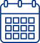

1
Regenboog
Geplaatst op 18 april 2011Bus 21. Ik stap uit. Het is een gure dag, geen ultraviolette zonnestralen die het tere huidje van mijn zoontje aantasten. Hij ligt te slapen in z’n paarse kinderwagen. De reizigers lopen van en naar CS.
1
Bus 21. Ik stap uit. Het is een gure dag, geen ultraviolette zonnestralen die het tere huidje van mijn zoontje aantasten. Hij ligt te slapen in z’n paarse kinderwagen. De reizigers lopen van en naar CS.

Euh, ik stap, euh uit bus 21. Halte Centraal Station. In de stad waar ik met zoveel plezier burgemeester was. Tot nu toe gaat het goed. De kinderwagen slaapt in mijn zoon, of, nee, euh euh, ik bedoel…

Piepende remmen, bus 21 komt tot stilstand. De stem van de buschauffeur, naar mij gericht, zakelijk, niet vriendelijk, niet onvriendelijk: ‘Centraal Station, eindhalte’. Het sissende geluid van busdeuren die open gaan.